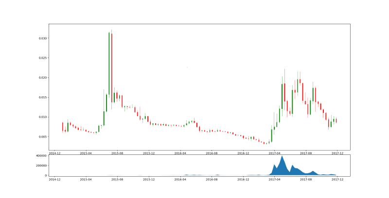

Finanzas
Siempre he tenido un interés por las ciencias econḿicas y como los computadores pueden ayudar a desarrollar conocimientos ya sea desde los datos o la fenomenología.
Desde el año pasado estoy desarrollando un conjunto de herramienas para ayudar al comerciante de acciones o divisas, comenzando con el analisis estadístico básico de las series de tiempo de los mercados hasta llegar a algoritmos más sofisticados como los de inteligencia artificial.
Con este horizonte he estado trabajando en un tipo de aprendizaje basado en algoritmos genéticos.
Los algoritmos genético, o más general, computación evolutiva, es una parte de la inteligencia artificial cuyo objetivo es resolver problemas de optimización. Estos algoritmos son inspirados en la forma en la que las especies evolucionan y por eso tienen tres procesos principales:
- Selección: Los mejores individuos de la población sobreviven de acuerdo a la función a optimizar.
- Recombinación. Es como los individuos comparten información para producir un nuevo (y tal vez mejor) individuo.
- Mutación. Una modificación estocástica al nuevo individuo.
Los algoritmos genéticos no suelen usarse en procesos de aprendizaje. Es posible (paper) pero también computacionalmente costoso. A pesar de eso es muy útil cuando no se aplica a negociaciones de alta frecuencia (HFT) pero estoy explorando esa área usando GPUs.

Los algoritmos genéticos se usan actualmente en el mercado bursátil seleccioando de manera inteligente un conjunto de variables (de una acción específica) y ajustando unos valores para maximizar las ganancias. La idea principal de este algoritmo es generar portafolios diversificados de inversión infiriendo los mejores movimientos entre activos para un conjunto de condiciones dadas por las variables de las monedas… sí, criptomonedas. Es como predecir como fluye lso volúmenes de activos dentro del ecosistema de las criptomonedas. Se peude leer un poco más acerca de esta iniciativa aquí.